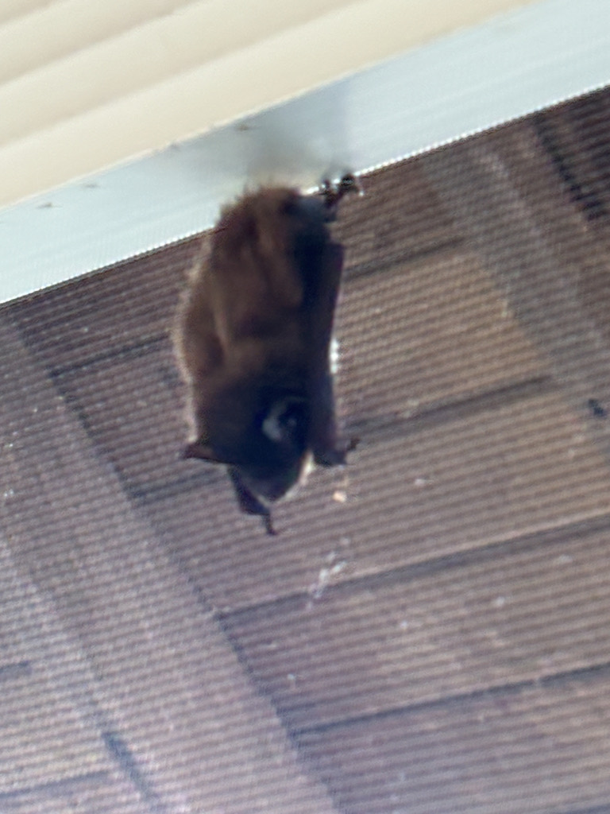

- Evening bats emerge soon after dusk — often before it is fully dark — and forage with a slow, steady flight that makes them easier to follow with the eye than most bats. Look for them over open water or along forest edges in the last twenty minutes of evening light.
- Females usually give birth to twins, and each pup at birth weighs roughly half the mother's post-birth body weight. That makes evening bat newborns among the largest relative to maternal size of any mammal.
- Unlike many North American bats, evening bats never use caves — not for roosting, not for hibernating, not at all. They live and raise their young entirely in tree cavities, behind loose bark, and occasionally in human structures.
- Pups can fly by the end of their third week of life — going from blind, hairless newborn to airborne predator in roughly twenty days. That developmental sprint is one of the fastest of any mammal of comparable size.
A small bat with a wingspan of 10 to 11 inches and a body length of roughly 1.9 to 2.6 inches — about the size of a large thumb. Weight ranges from 7 to 14 grams, roughly equivalent to two nickels. The overall proportions are compact, and the flight is notably slow and steady compared to swifter bat species.
The back is dark brown, occasionally with a bronze or reddish tint. The belly is paler — whitish to light brown. The ears, wings, and tail membrane are dark, almost black, and the muzzle is broad, hairless, and nearly black as well.
The muzzle has a blunt, slightly dog-like look. The ears are short and dark, and the tragus — the small fleshy flap inside the ear opening that helps the bat pinpoint the direction of incoming sound — is short, rounded, and curved. It is a useful identification detail if you have the bat in hand, but not visible in flight.
The evening bat closely resembles the big brown bat but is noticeably smaller. It can also be confused with mouse-eared bats (Myotis species). In flight the slow, steady wingbeat and tendency to forage low over open water or along forest edges are useful behavioral clues, though definitive identification usually requires a close look or a bat detector.
Like all evening bats and other smooth-faced insect-eating bats in the family Vespertilionidae, the evening bat navigates and hunts entirely by echolocation — emitting ultrasonic pulses and reading the returning echoes to detect, track, and intercept flying insects. These calls are far above the range of human hearing and inaudible without a bat detector. Within the roost, mothers and pups exchange audible squeaks and chirps that allow a mother to locate her own pup among dozens of others. A bat detector set to pick up high-to-low sweeping calls in the roughly 35–45 kHz range can help detect foraging evening bats, though acoustic identification to species requires some experience.
At dusk, watch for a small dark bat with a slow and steady — almost leisurely — flight, often working back and forth over a pond or along a vegetated edge. The overall color is uniformly dark brown above with no obvious pale patches or distinctive markings. Size is the best field mark: smaller than a big brown bat, larger than most Myotis species. A bat detector tuned to pick up high-to-low sweeping calls around 35–45 kHz will help confirm the species, though visual separation from similar bats in flight is genuinely difficult.
Strictly insectivorous. Evening bats forage on a wide variety of small night-flying insects, with beetles as a preferred prey; moths, flies, mosquitoes, flying ants, planthoppers, spittlebugs, and June beetles are also regularly taken. Prey is caught on the wing during slow, maneuverable flight, typically over water or along forest edges where insect concentrations are highest.
The best place to look is over any open water in the park — a pond, a wet depression, a slow drainage channel — in the last twenty minutes before full dark. Evening bats often work back and forth over the same stretch of water repeatedly, which makes them easier to follow than faster-flying species. The vegetated edges where forest or shrub meets open ground are also productive. Scan low and watch for the characteristically slow, steady wingbeat.
Active at night year-round in Manatee County, with peak foraging at dusk and again just before dawn. Most visible to a casual observer in the half-hour around sunset, when there is still enough light to see bats against the sky. Spring and summer evenings, when insect activity is highest and maternity colonies are at full size, offer the best chance of seeing multiple individuals. Florida's mild winters keep at least some bats active even in the coolest months, though foraging activity tracks insect availability and may slow on cold nights.
Watch foraging bats freely from a comfortable distance at dusk — they are entirely focused on insects and will ignore you. Do not attempt to handle any bat, whether it appears healthy or not. If you find a bat on the ground or clinging to a low surface during daylight, do not touch it; alert park staff. A bat flying in a building at night is not dangerous if left alone — open windows and doors and it will find its way out.

- © Randall Carter (CC-BY-NC), via iNaturalist